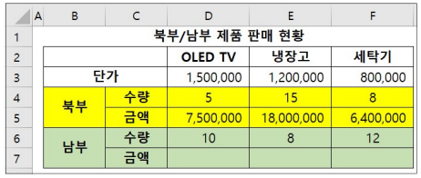

2026년 컴퓨터활용능력 2급 기출문제
제1과목 컴퓨터 일반
1. 다음 중 네트워크 장비인 브리지(Bridge)에 대한 설명으로 옳은 것은?
[해설]
- 브리지(Bridge)에 대한 설명으로 옳은 것은 1번입니다.
- 2번은 라우터, 3번은 게이트웨이, 4번은 허브에 대한 설명입니다.
2. 다음 중 한글 Windows 10의 [폴더 옵션]에서 설정할 수 있는 작업에 해당되지 않는 것은?
[해설]
- 폴더 옵션의 '숨김 파일, 폴더 및 드라이브 표시'는 단순히 숨김 속성이 지정된 폴더/파일을 보이도록 하는 것 뿐입니다.
- 숨김 폴더/파일의 숨김 속성을 해제하려면 해당 폴더/파일의 속성 대화상자에서 '숨김'의 체크를 해제해야 합니다.
3. 다음 중 한글 Windows 10의 [메모장]에 대한 설명으로 옳지 않은 것은?
[해설]
- 메모장에서는 그림, 차트 등의 OLE 개체를 삽입할 수 없습니다.
4. 다음 중 한글 Windows 10에서 외부로부터의 불법적인 해킹 등의 위협 요소로부터 컴퓨터를 보호하는 역할을 하는 것은 무엇인가?
[해설]
- 문제에 제시된 내용은 Windows Defender 방화벽에 대한 설명입니다.
5. 다음 중 Windows 10의 [설정] → [앱]에서 설정할 수 없는 기능은?
[해설]
- Windows 10의 업데이트 현황은 [설정] → [업데이트 및 보안]에서 확인 및 설정할 수 있습니다.
6. 다음 중 컴퓨터의 기억장치에 관한 설명으로 옳은 것은?
[해설]
- 기억장치에 관한 설명으로 옳은 것은 1번입니다.
- 2번은 연상(연관) 메모리(Associative Memory), 3번은 가상 메모리(Virtual Memory), 4번은 플래시 메모리(Flash Memory)에 대한 설명입니다.
7. 다음 중 파일 삭제 시 파일이 [휴지통]에 임시 보관되어 복원이 가능한 경우는?
[해설]
- 바탕 화면에 있는 파일을 [휴지통]으로 드래그 앤 드롭하여 삭제한 파일은 복원할 수 있습니다.
8. 다음 중 Windows 10 작업 표시줄의 점프 목록 사용에 대한 설명으로 옳지 않은 것은?
[해설]
- 점프 목록에서 항목을 제거하려면 해당 항목의 바로 가기 메뉴에서 [이 목록에서 제거]를 선택하면 됩니다.
9. 다음 중 한글 Windows 10에서 바로 가기 아이콘에 대한 설명으로 옳지 않은 것은?
[해설]
- 원본 파일을 삭제하면 해당 파일의 바로 가기 아이콘을 이용한 실행은 불가능합니다.
10. 다음 중 자료의 구성 단위에 대한 설명으로 옳지 않은 것은?
[해설]
- 비트(Bit)는 정보의 최소 단위이며, 8비트가 모여 1바이트(Byte)가 됩니다.
11. 다음 중 웹 브라우저의 기능에 관한 설명으로 옳지 않은 것은?
[해설]
- 웹 브라우저의 '설정'에는 멀티미디어 편집기를 선택할 수 있는 메뉴가 없습니다.
12. 다음 중 이미지의 가장자리가 톱니 모양으로 표현되는 계단 현상을 없애기 위하여 경계선을 부드럽게 해주는 필터링 기술은?
[해설]
- 문제에 제시된 내용은 안티앨리어싱(Antialiasing)의 개념입니다.
- 디더링: 제한된 색상을 조합하여 복잡한 색이나 새로운 색을 만드는 작업
- 렌더링: 3차원 애니메이션을 만드는 과정 중의 하나로 물체의 모형에 명암과 색상을 입혀 사실감을 더해 주는 작업
- 모핑: 2개의 이미지를 부드럽게 연결하여 변환·통합하는 기술
13. 다음 중 컴퓨터의 문자 표현 코드인 ASCII 코드의 특징으로 옳은 것은?
[해설]
- ASCII 코드의 특징으로 옳은 것은 2번입니다.
- 1번과 3번은 EBCDIC 코드, 4번은 해밍 코드에 대한 설명입니다.
14. 컴퓨터에서 데이터를 주고받는 통로를 버스라고 한다. 다음 중 버스에 대한 설명으로 옳지 않은 것은?
[해설]
- 주소 버스는 주기억장치의 주소가 각 장치로 전달되는 통로입니다.
- 제어장치의 제어 신호가 각 장치로 전달되는 통로는 제어 버스입니다.
15. 다음 중 멀티미디어와 관련하여 동영상 전문가 그룹에 의해서 제안된 비디오 또는 오디오 압축에 관한 일련의 표준으로 옳은 것은?
[해설]
- 동영상 전문가 그룹에서 제정한 동영상 압축 기술에 대한 국제 표준 규격은 MPEG입니다.
- XML: HTML의 단점을 보완하여 웹에서 구조화된 문서를 상호 교환하기 위한 언어
- JPEG: 정지 영상 압축 방식의 국제 표준 규격
16. 컴퓨터를 분류하는 방법에는 처리 능력, 취급하는 데이터의 형태, 사용 용도 등이 있다. 다음 중 컴퓨터가 취급하는 데이터의 형태에 따라 분류한 컴퓨터가 아닌 것은?
[해설]
- 데스크톱 컴퓨터는 마이크로컴퓨터의 한 종류로, 처리 능력에 따른 분류에 해당합니다.
- 데이터 형태에 따른 분류: 디지털 컴퓨터, 아날로그 컴퓨터, 하이브리드 컴퓨터
17. 다음 중 무선 랜(WLAN) 시스템을 구성하기 위한 주요 구성 요소에 해당하지 않는 것은?
[해설]
- 리피터(Repeater)는 신호를 재생하여 장거리 전송을 돕는 유선 네트워크 관련 장치입니다.
- 무선 랜 구성 요소: AP, 안테나, 무선 랜카드 등
18. 다음 중 인터넷에서 사용하는 도메인 네임에 대한 설명으로 옳지 않은 것은?
[해설]
- 도메인 네임은 전 세계를 통틀어 중복되지 않는 고유한 주소로, 사용자가 임의로 설정할 수 없습니다.
19. 다음 중 Windows의 연결 프로그램에 대한 설명으로 옳지 않은 것은?
[해설]
- 확장자가 다른 파일이라도 필요에 따라 동일한 앱(연결 프로그램)으로 지정하여 열 수 있습니다.
20. 다음 중 멀티미디어 파일을 다운 받을 때 지연시간을 줄이기 위해 데이터를 다운로드 받으면서 재생할 수 있는 기술로 옳은 것은?
[해설]
- 다운로드와 동시에 실시간으로 데이터를 재생하는 기술은 스트리밍(Streaming) 기술입니다.
제2과목 스프레드시트 일반
21. 다음 중 [텍스트 나누기] 기능에 대한 설명으로 옳지 않은 것은?
[해설]
- '텍스트 마법사' 2단계에서는 두 가지 이상의 구분 기호를 동시에 선택하여 텍스트 나누기를 수행할 수 있습니다.
22. 다음이 설명하는 차트는 무엇인가?
• 전체 항목의 합에 대한 각 항목의 비율을 나타내는 차트로, 중요한 요소를 강조할 때 사용한다.
• 항상 한 개의 데이터 계열만 사용하므로 축이 없다.
• 항상 한 개의 데이터 계열만 사용하므로 축이 없다.
[해설]
- 항상 단 하나의 데이터 계열만 가지며 축이 없는 차트는 원형 차트입니다.
- 도넛형 차트는 원형 차트와 유사하지만 여러 개의 데이터 계열을 가질 수 있습니다.
23. 워크시트에 "(tel)"을 입력하면 자동으로 "☎"로 변경되어 입력되도록 하는 기능은?
[해설]
- 특정 입력 문자열을 사전에 지정된 다른 문자나 기호로 자동으로 치환하는 기능은 '자동 고침' 기능입니다.
24. 다음 중 [페이지 설정] 대화상자의 [머리글/바닥글] 탭에 대한 설명으로 옳지 않은 것은?
[해설]
- 워크시트 전체의 확대/축소 배율은 [페이지] 탭의 '배율'에서 지정하며, '문서에 맞게 배율 조정'은 머리글/바닥글 텍스트의 글꼴 크기를 문서 배율 변화에 맞추는 기능입니다.
25. [A1] 셀에 '851010-1234567'과 같이 주민등록번호가 입력되어 있을 때, 이 셀의 값을 이용하여 [B1] 셀에 성별을 '남' 또는 '여'로 표시하고자 한다. 다음 중 이를 위한 수식으로 옳은 것은? (단, 주민등록번호의 8번째 글자가 1이면 남자, 2이면 여자임)
[해설]
- MID(A1, 8, 1)로 8번째 문자 하나를 추출하면 1이 되므로 CHOOSE(1, "남", "여")가 되어 "남"을 반환합니다.
- 4번의 경우 RIGHT(A1, 8)은 오른쪽부터 8글자(-1234567)를 추출하므로 잘못되었습니다.
26. 다음 중 데이터 입력에 대한 설명으로 옳지 않은 것은?
[해설]
- 텍스트 및 텍스트/숫자 조합 데이터는 자동 완성 기능이 적용되지만, 숫자, 날짜, 시간 데이터는 자동 완성이 적용되지 않습니다.
27. 다음 중 가상 분석 도구인 [데이터 표]에 대한 설명으로 옳지 않은 것은?
[해설]
- 데이터 표의 결과로 생성된 셀 배열의 일부만 수정하거나 삭제할 수 없습니다. 전체를 삭제해야 합니다.
28. 다음 중 [매크로] 대화상자에 대한 설명으로 옳지 않은 것은?
[해설]
- [만들기] 단추를 클릭하면 새 매크로 코드를 직접 입력할 수 있는 Visual Basic Editor 창이 열립니다.
29. 다음 중 원본 데이터를 지정된 서식으로 설정하였을 때, 결과가 옳지 않은 것은?
[해설]
- 시간 서식에서 hh는 2자릿수 시를 의미하므로, 15:30:22에 hh:mm:ss AM/PM 서식을 적용하면 '03:30:22 PM'으로 표시됩니다.
30. 북부/남부의 제품 판매 현황에서 금액은 단가 × 수량으로 산출한 것이다. 다음 중 남부의 금액 [D7:F7]을 구하는 방법으로 옳은 것은 무엇인가? (단, 북부의 금액 [D5:F5]은 [D5] 셀의 수식(=D$3*D4)을 [F5] 셀까지 채우기 핸들을 드래그하여 구한 것이다.)

[해설]
- [D5]의 수식 '=D$3*D4'를 복사하여 2행 아래인 [D7]에 붙여넣으면, 행 가변 참조에 의해 수식이 '=D$3*D6'으로 자동으로 변경되어 정상적으로 남부 단가×수량이 계산됩니다.
31. 다음 중 매크로의 바로 가기 키에 대한 설명으로 옳지 않은 것은?
[해설]
- 엑셀의 기본 단축키(예: Ctrl+C, Ctrl+V 등)도 매크로 단축키로 중복 지정할 수 있으며, 이 경우 매크로 단축키가 우선 적용됩니다.
32. 다음 중 데이터 통합에 대한 설명으로 옳지 않은 것은?
[해설]
- 데이터 통합에서 참조 영역은 3개에 제한되지 않으며, 시스템의 메모리가 허용하는 한 제한 없이 추가할 수 있습니다.
33. 다음 중 [인쇄 미리 보기 및 인쇄]에 대한 설명으로 옳지 않은 것은?
[해설]
- '여백 표시'를 클릭하면 미리 보기 화면 상에 여백 경계선과 열 너비 조절 선이 표시될 뿐, '페이지 설정' 대화상자가 열리지는 않습니다.
34. 다음 중 =SUM(A3:A9) 수식이 =SUM(A3A9)와 같이 범위 참조의 콜론(:)이 생략된 경우 나타나는 오류 메시지로 옳은 것은?
[해설]
- 콜론이 생략되어 'A3A9' 형태가 되면 엑셀은 이를 인식할 수 없는 잘못된 이름(셀/범위 이름)으로 판단하여 #NAME? 오류를 발생시킵니다.
35. 조건부 서식에 대한 설명으로 틀린 것은?
[해설]
- 조건부 서식은 조건에 참(True)일 때 적용될 서식만 지정할 수 있으며, 조건에 맞지 않을 경우에 적용할 서식을 별도로 설정할 수는 없습니다.
36. 다음 중 피벗 테이블에 대한 설명으로 옳지 않은 것은?
[해설]
- 피벗 테이블을 삭제하더라도 피벗 차트는 삭제되지 않고 일반 차트로 전환되어 남아있습니다.
37. 다음은 '창 나누기'와 '틀 고정'에 대한 설명이다. 잘못된 것은?
[해설]
- 창 구분선은 마우스 드래그로 이동이 가능하지만, 틀 고정선은 마우스로 끌어서 위치를 이동할 수 없습니다.
38. 다음 중 함수식에 대한 결과가 옳지 않은 것은?
[해설]
- =POWER(5, 3)은 5의 3제곱($5^3$)을 계산하므로 결과는 125입니다.
39. 다음 중 차트의 범례 설정에 대한 설명으로 옳지 않은 것은?
[해설]
- 범례를 수동으로 이동하거나 크기를 변경해도 그림 영역의 크기 및 위치가 자동으로 변경되지는 않습니다.
40. 다음 중 [시트 보호] 기능에 대한 설명으로 옳지 않은 것은?
[해설]
- 특정 셀을 편집 가능하도록 하려면 '잠금' 속성을 해제해야 하지만, 셀을 '보호(수정 불가)' 상태로 유지하려면 '잠금' 속성이 설정되어 있어야 합니다.